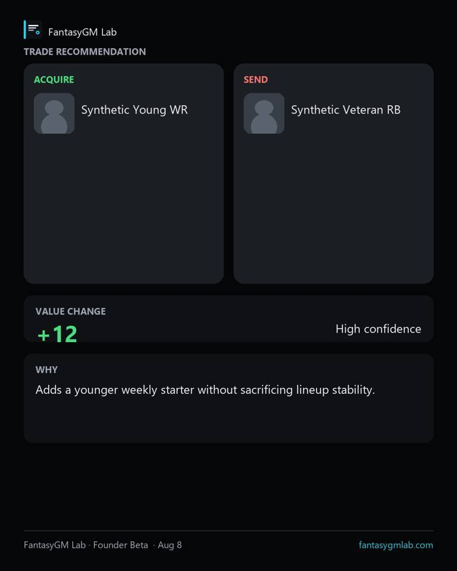
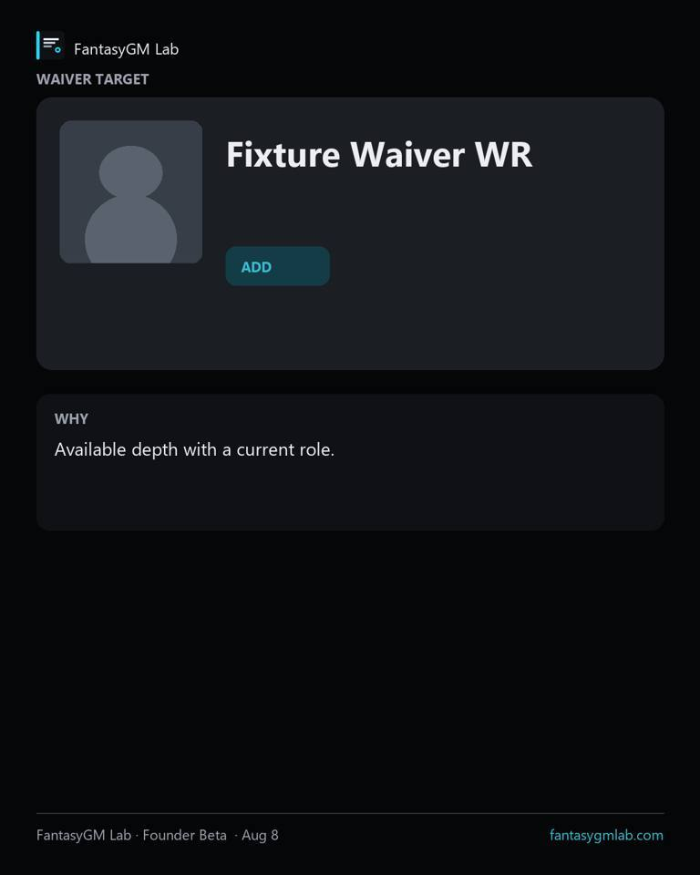
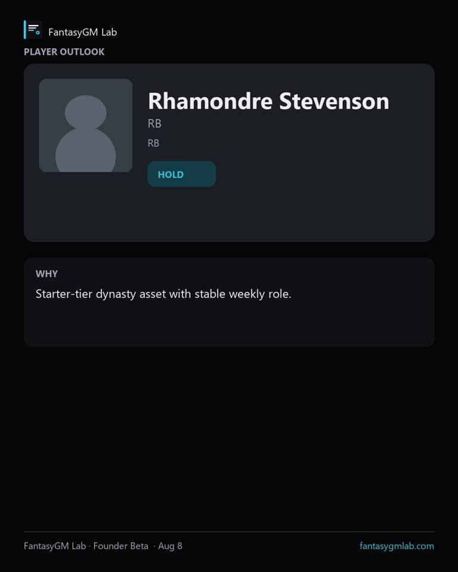
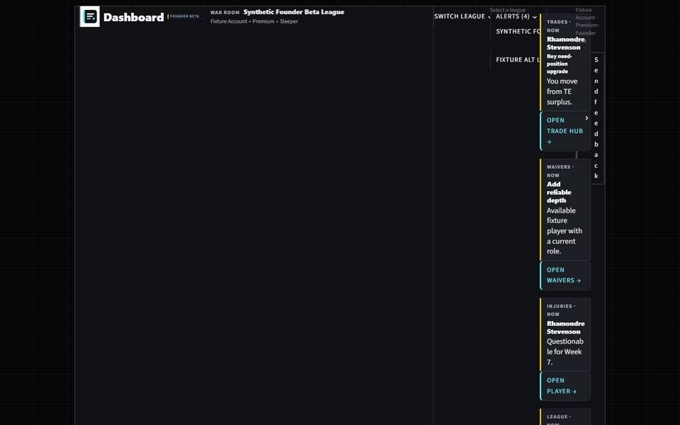

FantasyGM Lab
Founder Beta
League-aware recommendations for dynasty managers who want a clear next move.
Import your Sleeper league, open Today's Game Plan, and work trades, waivers, and roster decisions with current rankings.
What it does
Front-office tools for the league you actually manage
- Today's Game Plan
- Trade Hub
- Waivers
- Player rankings & context
- What Changed / Decision Memory
- GM Targets
Free vs Premium
Start with Free value. Premium adds depth on the same jobs.
Free includes
- League import
- Dashboard overview
- What Changed
- Trade preview
- Priority Adds
- Core roster view
Included now with Premium
- More next moves
- Full League Pulse
- Full trade board
- Full waiver board
- Advanced roster decisions
- Expanded league updates
- Decision Memory
- GM Targets
Premium is deeper decision support on the same FantasyGM Lab surfaces — not a separate product.
Premium checkout appears when billing is enabled for your account. Live billing is not enabled.
Product surfaces
Real FantasyGM Lab screens
Captured from the product UI — shown after the hero so the first fold stays light.




Next step
Import your league and open the War Room
Create an account or continue as a guest, then load your Sleeper league.